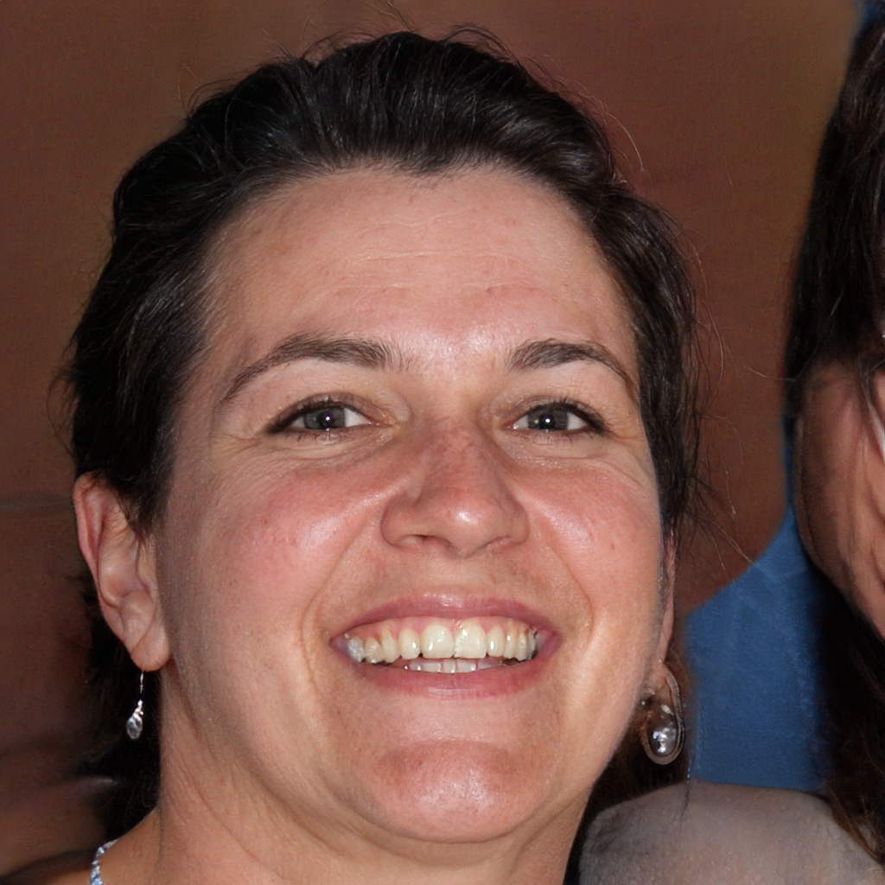
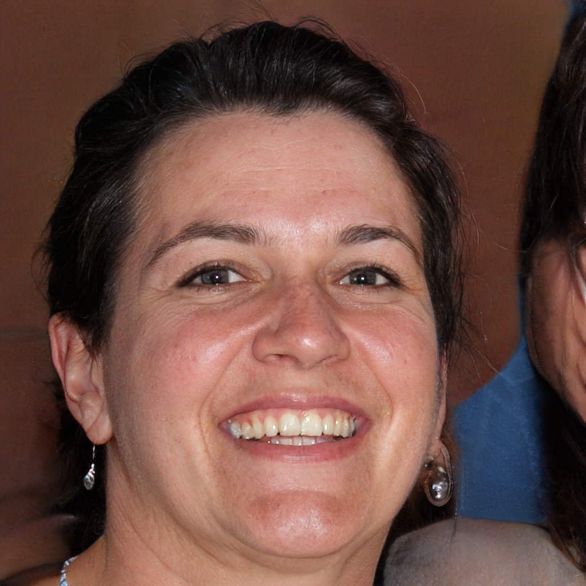

Elise
Bree
Erica
 

"After working with Lisa and her supportive coaching style, I have experienced exponential internal growth as she has helped me articulate and navigate my feelings and thoughts in a way I never thought possible. I was able to clearly see myself and life with new eyes and learn real life applicable tools to become who I want to be! I will forever be thankful for Lisa and her unique gift of coaching!"
"Lisa is an amazing life coach! She has helped me become a better mother, friend, wife, and person all while helping me give myself Grace if I make mistakes. I always come away from our coaching with a better understanding of who I am and who everyone else around me are. It's like a weight is lifted off my shoulders every time I meet with her. Thank you Lisa!"
"Lisa is an incredible life coach she is so relatable and understanding. I feel comfortable talking to her about anything and everything. Sometimes I wasn't sure what to talk about during our sessions, she would ask me about my week and we would easily find topics to discuss. The way she breaks down an issue I'm having, so that I better understand it is like an art. She help me in a wide variety of things, anywhere from mothering, religion, money, perfectionism, relationship with partner, anxiety, depression, etc."
BACK TO TOP